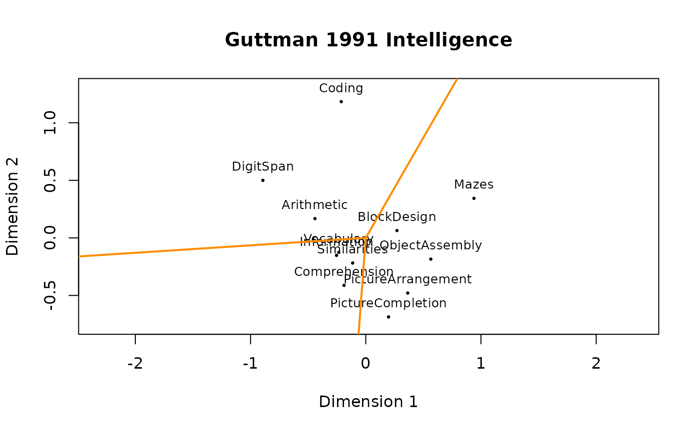

Guttman 1991 Intellligence Data
gutt91.RdData are based on the smacof package. It contains the correlations among 12 intelligence items, and the assignment to two facets: Material and Modality.
Format
A list with two elements: gutt91_cor, gutt91_var
- gutt91_cor
A correlation matrix of 12 intelligence items
- gutt91_var
A data frame with 12 observations and 3 variables: items = short name of the item, Material = Facet 1 (Oral, Manual, Paper), Modality = Facet 2 (verbal, numerical, figural)
References
Guttman, L. & Levy, S. (1991). Two structural laws for intelligence tests. Intelligence, 15, 79-103.
Examples
data(gutt91)
Kor <- gutt91$gutt91_cor
Facets <- gutt91$gutt91_var
# convert correlations to distances
Kor_D <- smacof::sim2diss(Kor, method = "corr", to.dist = TRUE)
# MDS
gutt91_mds <- smacof::mds(Kor_D, type = "ordinal")
plot(gutt91_mds, main = "Guttman 1991 Intelligence")
# Angular partition of Modality
angularPartition(crd = gutt91_mds$conf, group = Facets$Modality)

#> $cuts
#> Comprehension Mazes Arithmetic
#> -1.645176 1.049505 -3.076990
#>
#> $margin
#> [1] 0.1103395
#>
#> $misclass
#> [1] 0
#>
#> $misclass_points
#> [1] x y label
#> <0 rows> (or 0-length row.names)
#>
#> $sector
#> [1] 2 2 1 2 2 1 3 3 3 3 1 3
#>
#> $majority
#> [1] "numerical" "verbal" "figural"
#>
#> $center
#> [1] 1.838807e-16 -1.966698e-17
#>
#> $pt_angles
#> Information Similarities Arithmetic Vocabulary
#> -2.6020094 -2.0511100 2.7780239 -2.6488194
#> Comprehension DigitSpan PictureCompletion PictureArrangement
#> -2.0000848 2.6312076 -1.2902663 -0.9209234
#> BlockDesign ObjectAssembly Coding Mazes
#> 0.2315753 -0.3157876 1.7483111 0.3506980
#>